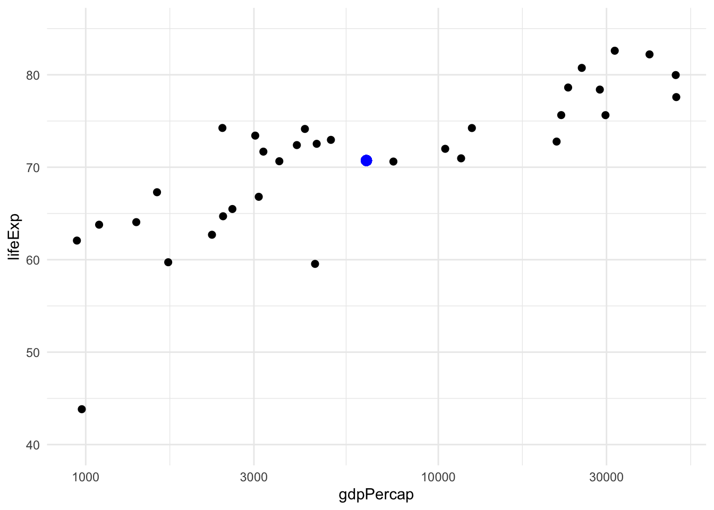
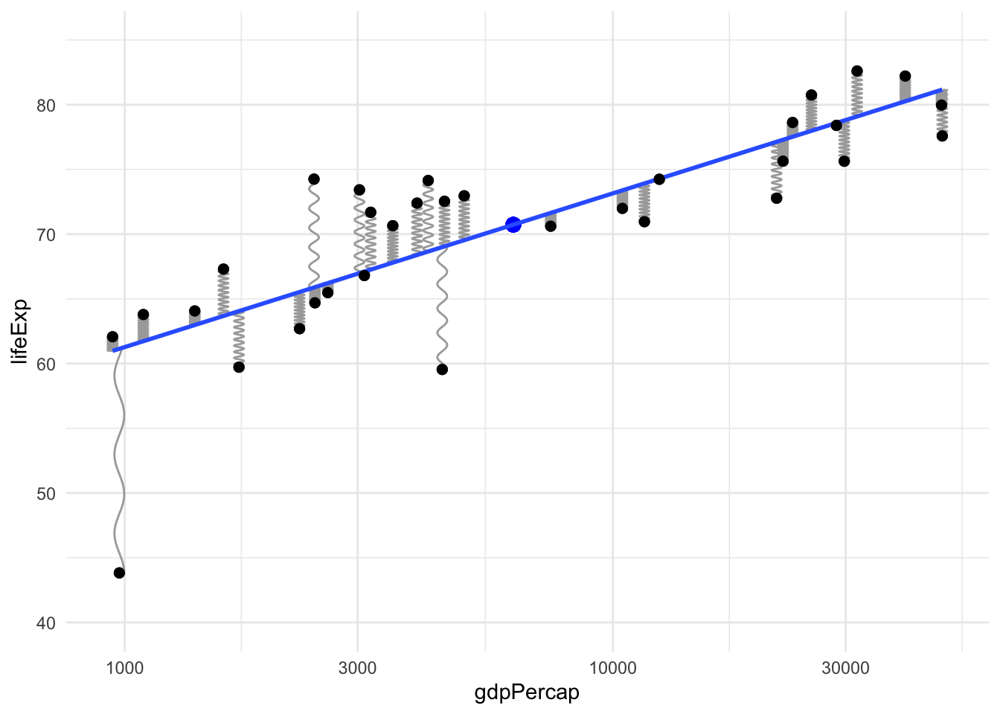
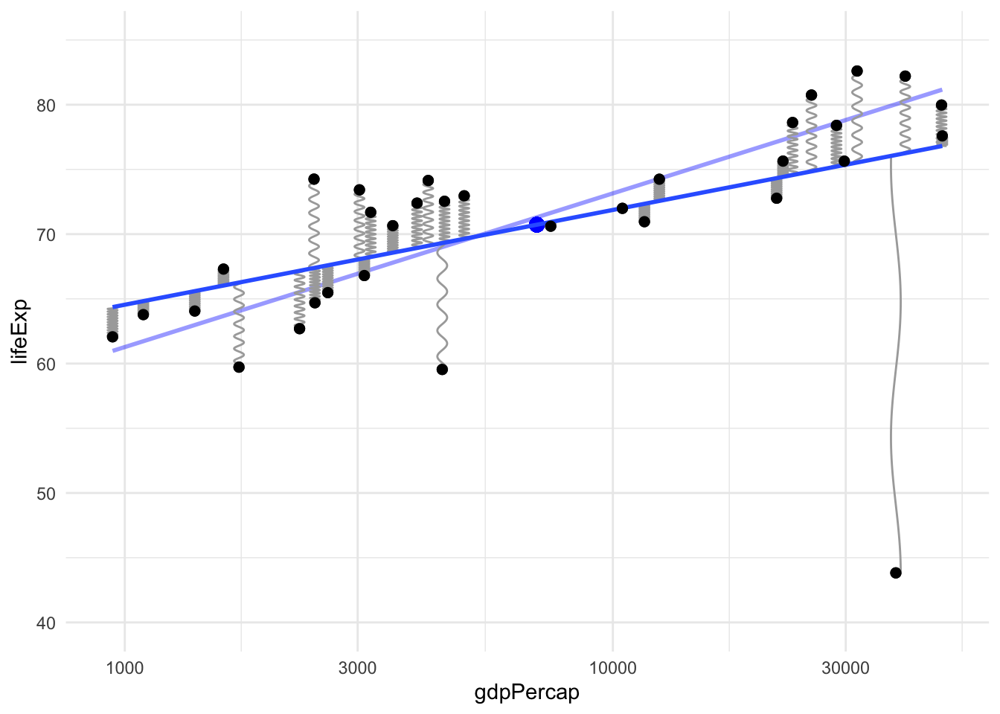
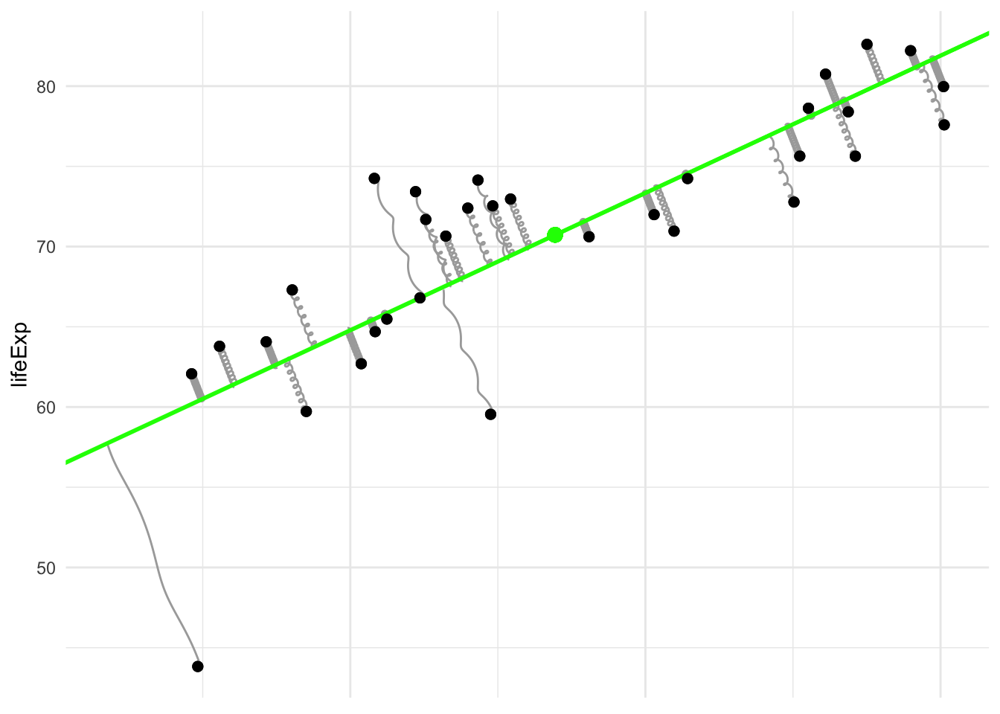
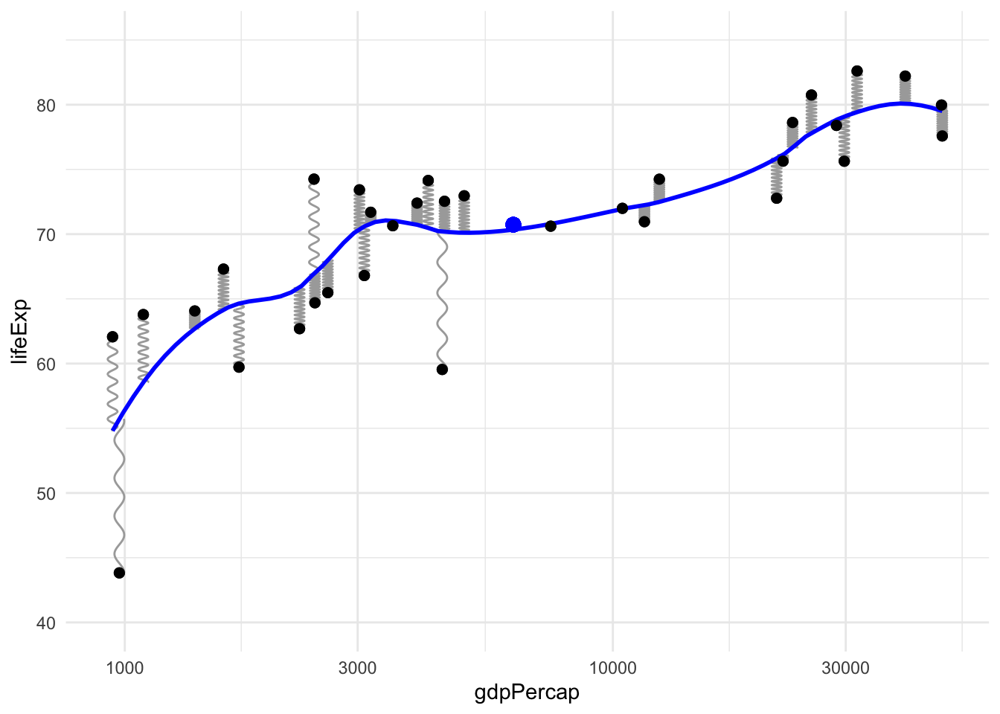

During a recent “Zoom” lecture a student asked me a question about outliers. In the process of answering I realized something that I knew was true but had never seen explained in any sources. This post is my first attempt to develop an analogy that connects least squares methods, like regression or PCA, to physical intuition about springs or elastics.
The simplest version
To illustrate I will use data from gapminder conveniently provided in an R package by Jenny Bryan. Consider these two variables in the dataset, GDP per capita and life expectancy, plotted here in a standard scatterplot:
(To have a less busy plot, one with fewer points, I’ve subsetted the data to the year 2007 and countries in Asia).
Now we’re going to bring physical intuition into this by imagining these points as physical objects. For example, we can interpret the mean \((\bar x, \bar y)\) = 6252.7, 70.7 as the center of mass (if we assume every point has the same mass). This is the larger, blue point in the plot above. It’s not really important to think of mass specifically, just that this point is the center of the physical ensemble.
We need a few simple rules for our physical system:
- Changing the data is not allowed, i.e. the points are immovable.
- For methods like regression (or PCA), we imagine a rigid object like a line (or hyperplane, in multiple regression) passing through the points, and the points exerting some force that changes the position of this body
- If these methods use the standard least squares loss function then this force can be represented by springs or elastics, all of the same length and strength, attached at one end to the points and on the other end to the line (or hyperplane).
This line (or hyperplane) may bounce around at first as the springs pull it toward their anchoring points, but eventually it settles into an equilibrium where the forces from all the opposing springs are balanced out. In this equilibrium state we have two immediate consequences:
- The rigid object (line or hyperplane) must pass through the center point. If it did not, there would be a net force acting on the object pulling it toward the center point, hence it would not yet be at equilibrium. In other words, all of the forces that would shift the object are exactly balanced out so it does not shift.
- The same is true about torques, all of the forces that would rotate the object are balanced out.
For regression we need one more rule: the springs are guided so they only pull in directions aligned with the axis of the outcome variable, i.e. “vertically.” Let’s call this the vertical rule for reference later.
Here is our simple example in picture form:
`geom_smooth()` using formula 'y ~ x'
(To create this plot I have copied the geom_spring example by Thomas Lin Pedersen from (the new version of!) the ggplot2 book).
If you are not immediately convinced that this intuition pays off, consider the issue that motivated me to think of this in the first place: influential outliers, points with high “leverage” in the statistical sense. The definition of statistical leverage is a bit complicated. But we can get the right intuition about it from a physical sense rather than those formal definitions. See the point in the bottom left of the plot above? Since it is pulling closer to the end of the line it has more leverage in the actual physical sense. This is the explanation I prefer to give students who aren’t taking a mathematical statistics course.
(In case you’re wondering, that point is Afghanistan, a nation where the United States remains at war for almost two decades now…)
Let’s see what happens when we move this one point so its leverage is being used to rotate the line clockwise instead of counter-clockwise. The old regression line, before this change, is shown as a faded line below for comparison.
`geom_smooth()` using formula 'y ~ x'
`geom_smooth()` using formula 'y ~ x'
Notice the following changes: the center of mass has shifted a little, the point we moved is now a greater distance from the line so its force is larger, and the line has rotated noticeably due to the influence of this one point, even though our dataset has over 30 points, because that point has a lot of leverage.
Hooke’s law
Is this intuition correct? Can we really think of least squares solutions (e.g. regression lines) as the equilibrium of a system of springs? Yes, or elastic rubber bands, or any material with linear elasticity, i.e. that follows Hooke’s law. Let’s consider how to apply this to regression, where for each point \((x_i, y_i)\) in the data, the spring attaches to the regression line at the point \((x_i, \hat y_i)\). So the spring is stretched to a length of \(|r_i| = |y_i - \hat y_i|\), and Hooke’s law says each spring is pulling on the line with a force proportional to this distance.
When the system of the line and springs has stopped moving and settled into an equilibrium, this equilibrium position minimizes the energy of the system, which in this case is just the potential energy. The potential energy stored in a spring that is stretched a certain distance is the integral of the force over that distance, and since the force scales with the distance this means the energy scales with the squared distance. Hence, the equilibrium of this physical system minimizes the total potential energy:
\[ \sum_{i=1}^n \frac{1}{2}k |r_i|^2 = \frac{1}{2}k \sum_{i=1}^n (y_i - \hat y_i)^2 \] where \(k > 0\) is the spring “stiffness” constant. The line that minimizes this is the same as the least squares regression line because the constants in front don’t change the minimizer. This argument works just as well for multiple regression as simple regression, even if we can’t visualize the higher dimensional plots involved. We can still think of springs that are pulling, perpendicular to the \(y\)-axis, on a hyperplane. In this case there can be torques in various different hyperplanes passing through the center of mass but they’re all balanced out, so the hyperplane doesn’t get “tilted” in any direction (if it’s in equilibrium).
Principal components analysis
Although PCA is often considered a more advanced topic than (simple) regression, its justification in our physical analogy is actually simpler. All we need to do is drop the vertical rule that was required for regression. In this case, the springs are allowed to rotate their angle of departure from the points, and their position of attachment to the line (or hyperplane) can slide to accommodate this change in angle. This results in an equilibrium where the springs are stretched as little possible. The total potential energy reaches a lower value because the springs are no longer constrained in which direction they can pull.

I’ve plotted the line in a different color to emphasize that it’s not the regression line. Notice that the springs are no longer pulling vertically, instead they connect to the line at the point on the line which is nearest (as measured by overall distance, not just distance in the \(y\)-coordinate alone).
(This is also called total least squares or a special case of Deming regression.)
Model complexity/elasticity: machine learning or AI
We can keep building on this analogy by using it to understand more complex modeling methods with another very simple idea: elasticity of the model object itself. Instead of a rigid body like a line (or hyperplane), if we imagine it’s made of an elastic material that can be (locally) stretched and deformed then we can get more complex types of regression models.
In this analogy, simpler models like linear regression correspond to more rigid objects like an unbendable metal stick, and more complex models allow flexibility or elasticity when fitting the conditional expectation function like a bendable plastic stick, a rubber band, or even a tensionless string in the most complex case where the model is allowed to fit the points perfectly.
For example, here’s the local polynomial regression method (loess) used by default in the ggplot function stat_smooth:

This intuition is not only useful for learning the basic ideas of model complexity and machine learning, it can even be used for cutting-edge research. For example see this recent paper on elasticity in neural networks (by my friend Weijie Su and his coauthor!)
Concluding thoughts
I think there’s a lot of potential here for statistics education, especially for younger students. It wouldn’t be too difficult to create a physical classroom demonstration using springs or elastics, especially for the PCA case since that wouldn’t require any guiding tracks to constraint the force direction to be vertical.
I also need to teach myself some more advanced plotting to gganimate these examples. If I succeed I’ll update this page.
References
I was surprised by how difficult it was to find any references for this elementary idea that provides physical intuition for such an important method as least squares regression. If you’re aware of any others please contact me because I would be glad to know of them.
(Update) Thankfully, after this post was shared widely on Twitter people have helped alert me to more references which are now included in the list below.
- Dwight, T. W. (1937). The fitting of linear regression lines by the method of least squares. The Forestry Chronicle, 13(4), 509-519.
- Levi, M. (2012). The mathematical mechanic: using physical reasoning to solve problems. Princeton University Press.
- Excerpt of the previous reference on stackexchange
Update: Thanks to everyone who has contacted me with these additional references!
Trey Goesh created this interactive simulation
Kieran Healy linked to this stackexchange answer with an awesome animation
Kameron Decker Harris pointed out this blog post showing splines as bendy physical sticks
Chris Schwarz at UIowa brought my attention to these lectures by the legendary Gil Strang
Michael Friendly created a bibliography of some references to physics inspired stats models
A lecture by Yann LeCun in the NYU deep learning course
A recent ICLR paper (with video of a short talk) by Will Grathwohl and others
A paper on deep learning by Jascha Sohl-Dickstein and others
John Davis at UIndiana created this demo showing 3D splines (just imagine the vertical lines are springs!) and pointed to a different physics-inspired example by Gavin Simpson